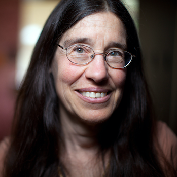
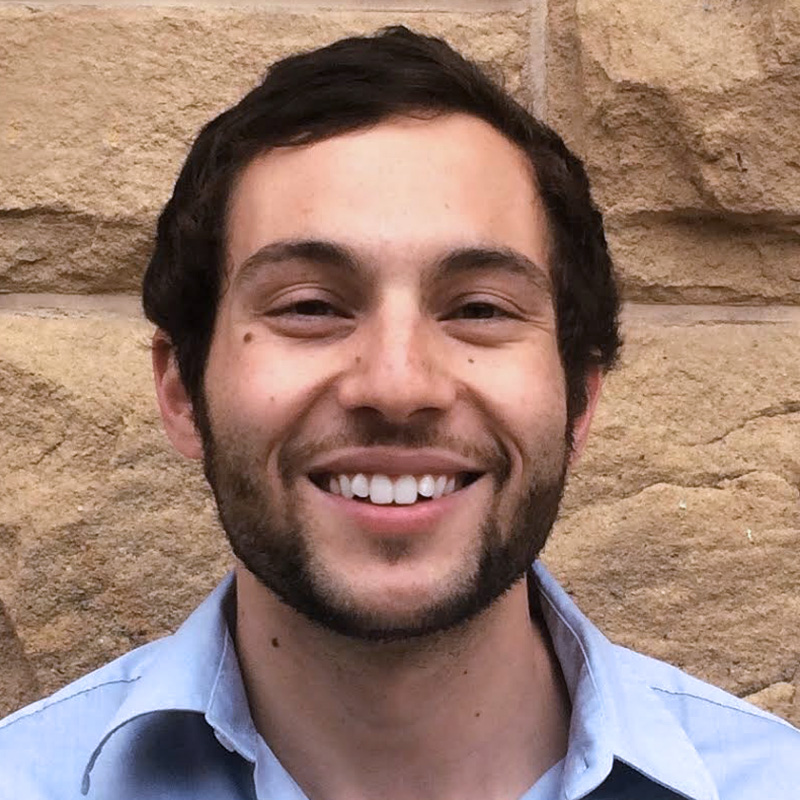
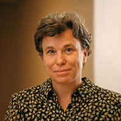
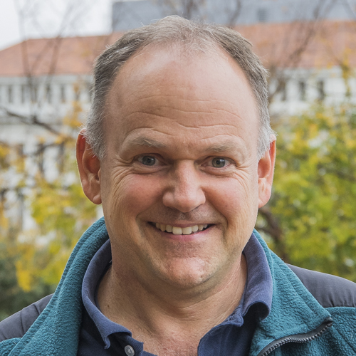
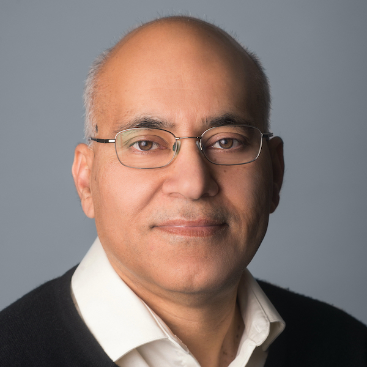
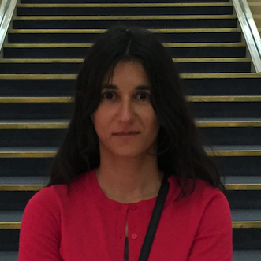
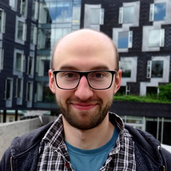
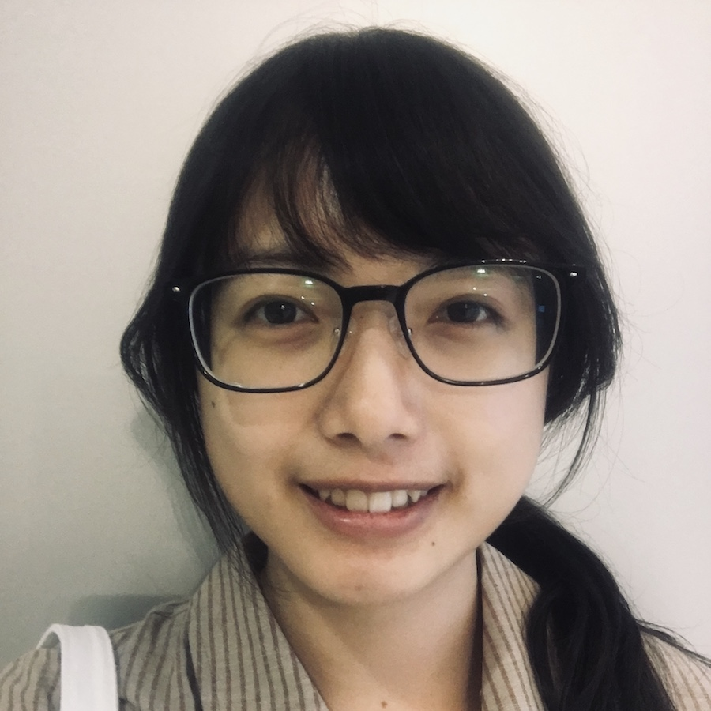
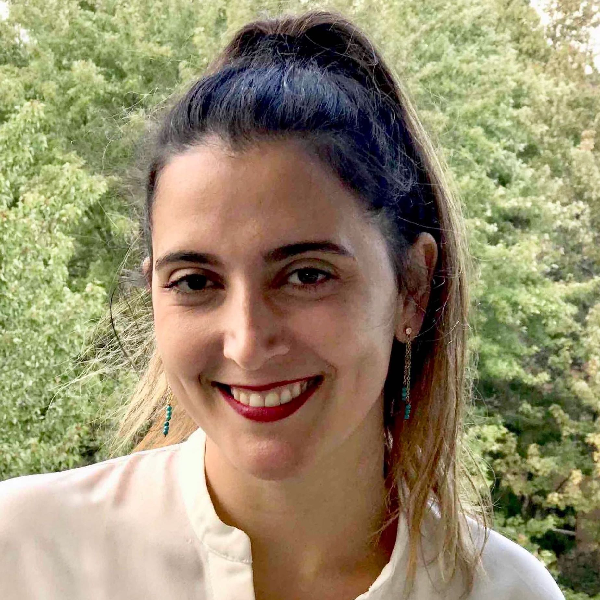

Causality in Vision
CVPR 2021 Workshop, June 20 (TBD), Virtual
Abstract
Correlation is not causality. However, this common sense is oftensurprisingly ignored in most of today’s computer vision systems, includingclassification, detection, segmentation, and vision-language models,because they are merely trained on correlated sample-label pairs, and theresultant models are nothing short of a likelihood lookup table --- we cannotexpect them to generalize to unseen data distribution, not mentioning tomore human-level tasks such as modularization, interpretation, andimagination. What is even more regrettable in our community is that weusually blame the poor generalization for insufficient data, and thus some ofus may be trapped in the infinite loop: “make a large dataset”---“over-fitted”---“make a larger one’’.
Causality is a new science of data generation, model training, andinference. Only by understanding the data causality, we can remove thespurious bias, disentangle the desired model effects, and modularize reusable features that generalize well. We deeply feel that it is a pressingdemand for our CV community to adopt causality and use it as a new mindto re-think the hype of feeding big data into gigantic deep models.
The goal of this workshop is to provide a comprehensive yet accessibleoverview of existing causality research and to help CV researchers to knowwhy and how to apply causality in their own work. We aim to invite speakers from this area to present their latest works and propose new challenges.
Schedule
| Time (PST) | Invited speaker | Title | Recording |
|---|---|---|---|
| 8:30 - 8:40 | - | Opening remarks | Video |
| 8:40 - 9:20 |

Elizabeth Spelke (Harvard) |
What infants know (and don’t know) | Video |
| 9:20 - 10:00 | Aude Oliva (MIT) |
Cognitive Insights for Models of Visual Recognition | Video |
| 10:00 - 10:40 |  Daniel Yurovsky (CMU) |
Toddlers’ common sense operates in socially-supported contexts | Video |
| 10:40 - 11:00 | - | Break | |
| 11:00 - 11:40 |  Joshua Tenenbaum (MIT) |
Reverse-engineering core common sense with the tools of probabilistic programs, game-style simulation engines, and inductive program synthesis | Video |
| 11:40 - 12:25 | Oral presentations |
"Learning to Learn Words from Visual Scenes" (Dídac Suris; Dave Epstein; Heng Ji; Shih-Fu Chang; Carl Vondrick) "Visual Commonsense Representation Learning via Causal Inference" (Tan Wang; Jianqiang Huang; Hanwang Zhang; Qianru Sun) "Response Time Analysis for Explainability of Visual Processing in CNNs" (Eric Taylor; Shashank Shekhar; Graham Taylor) |
Oral
1 Oral 2 Oral 3 |
| 12:25 - 13:00 | Lunch / poster session 1 | ||
| 13:00 - 13:40 |  Linda Smith (IU Bloomington) |
Common sense and the visual experiences of toddlers | Video |
| 13:40 - 14:20 |  Bruno Olshausen (Berkeley) |
How far are we from the common sense of a jumping spider? | Video |
| 14:20 - 15:20 | Coffee Break / poster session 2 | ||
| 15:20 - 16:00 | Larry Zitnick (FAIR) |
What is the right question to ask? | Video |
| 16:00 - 16:40 | Alison Gopnik (Berkeley) |
Children are MESSes - Model Building Exploratory Social Learning Systems | Video |
| 16:40 - 17:20 |  Jitendra Malik (Berkeley) |
Turing's Baby | Video |
| 17:20 - 17:30 | - | Break | |
| 17:30 - 18:30 | All invited speakers | Panel discussion | Video |
Introduction
What can a toddler do? Although young toddlers might seem helpless, they have a basic understanding of how the world works (i.e., intuitive physics), how people work (i.e., intuitive psychology), and of what their parents tell them. Furthermore, they have learned these abilities without 3D bounding box or segmentation annotations, or annotations regarding goals and intentions. What they can do is so elementary that we often take it for granted. Yet, it remains elusive for current machine learning models for perception, language understanding, reasoning or interaction with the world.
Current AI systems do well in detecting and naming objects in photographs, recognizing actions in sports from YouTube videos, or answering complicated questions regarding images---questions they have been trained to answer. However, they cannot easily extrapolate their knowledge to new situations, they cannot reason about space and object locations, or about goals and intentions the way toddlers do. In short, they do not have common sense. Without common sense, our systems are unpredictable in unseen situations, are difficult to teach and communicate with, and do not self-improve in a stable manner.
In this workshop, we will try to answer the following questions:
- How far are current AI systems from the vision, language and reasoning abilities of a toddler?
- What are some insights we can draw from our understanding of toddlers and the human brain to improve current AI systems?
- To build human-like common sense, what research topics need continued exploration, and what topics are still missing?
We would like to bring together leading researchers on neuroscience, psychology, computer vision and robotics to discuss these questions and debate on their answers. We have an exciting list of invited speakers from these domains. We will also invite researchers to submit peer-reviewed papers on the aforementioned topics. Our one-day workshop will have a poster session, an oral session and a panel discussion to enable dialogue and the exchange of ideas.
Organizers
|  |  | ||
| Katerina Fragkiadaki (CMU) | Adam Harley (CMU) | Phillip Isola (MIT) | Fuxin Li (Oregon State) |
|  |  |  |
|
| Fish Tung (CMU) | Aria Wang (CMU) | Leila Wehbe (CMU) | Jiajun Wu (Stanford) |